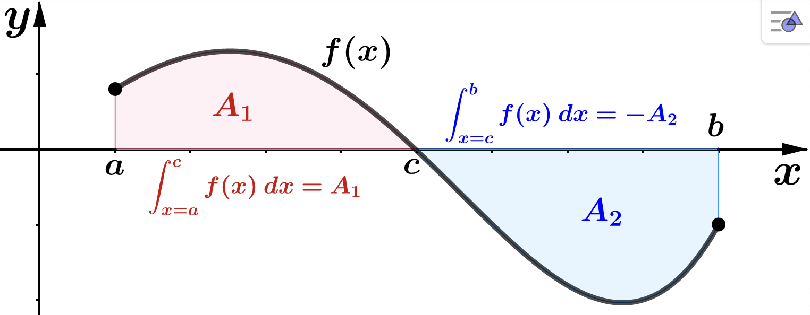
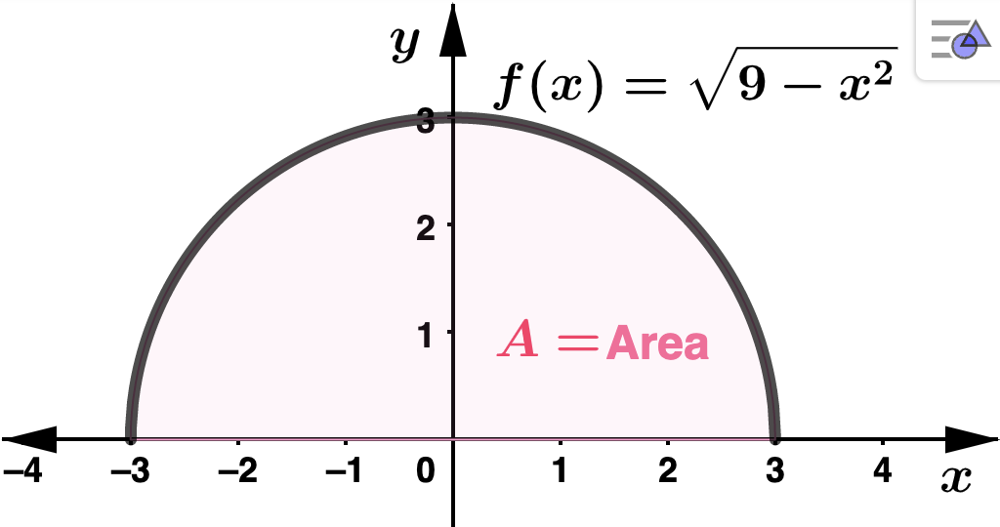
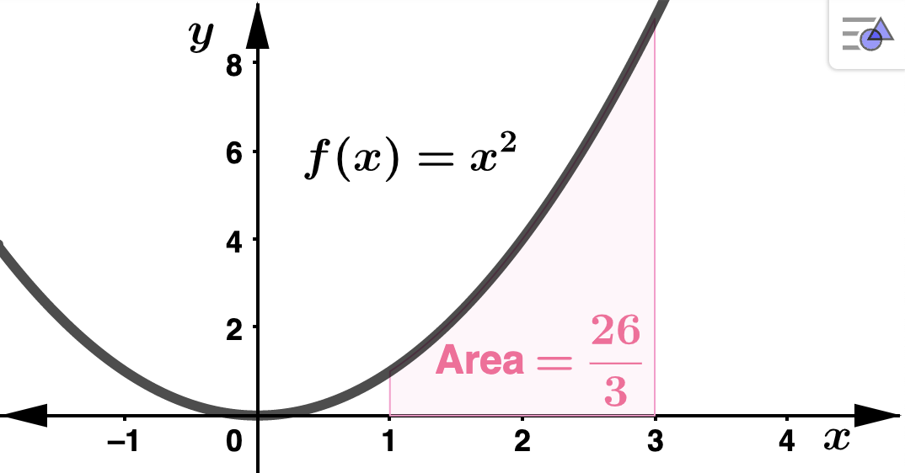
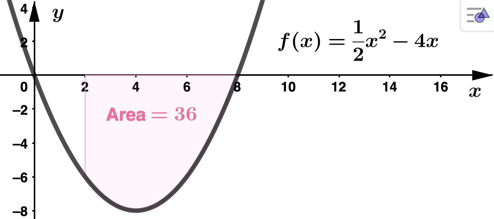
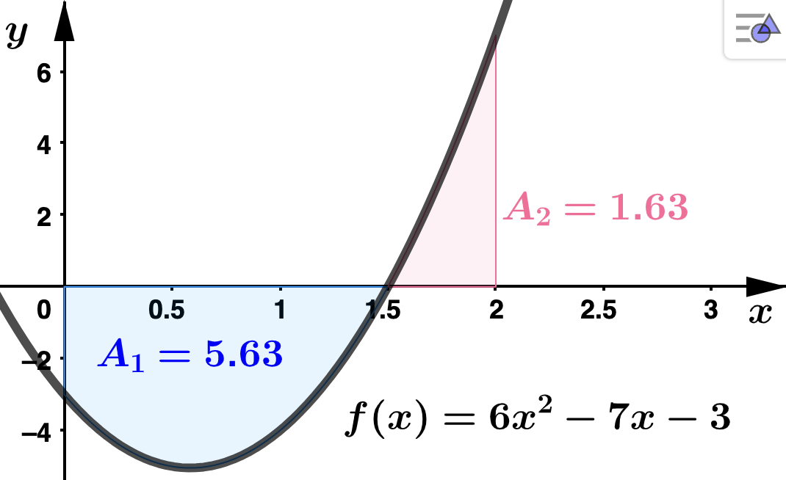

Section 4.3 The Fundamental Theorem of Calculus
Theorem 4.3.1. The Fundamental Theorem of Calculus (FTC).
Suppose \(f(x)\) is continuous on the interval \([a,b]\) and let \(F(x)\) be any anitderivative of \(f(x)\) (that is, \(F' = f\)). Then
\begin{equation*}
\int_{x=a}^{b} f(x) \: dx = F(x) \Big|_{x=a}^{b} = F(b) - F(a)
\end{equation*}
Geometric Interpretation of Definite Integrals
In each item below, \(A\) represents the area between the graph of \(f\) and the interval \([a,b]\text{.}\) Notat that area \(A\) is always greater than or equal to 0: \(A \geq 0\text{.}\)
Properties of the Definite Integral
Assume that \(f\) and \(g\) are integrable on \([a,b]\) and let \(c\) and \(k\) be real numbers.
\(\displaystyle \int_{x=a}^{b} k f(x) \: dx = k \int_{x=a}^{b} f(x) \: dx\)
\(\displaystyle \int_{x=a}^{b} (f(x) \pm g(x)) \: dx = \int_{x=a}^{b} f(x) \: dx \pm \int_{x=a}^{b} g(x) \: dx\)
\(\displaystyle \int_{x=a}^{b} f(x) \: dx = \int_{x=a}^{c} f(x) \: dx + \int_{x=c}^{b} f(x) \: dx \)
\(\displaystyle \int_{x=a}^{b} f(x) \: dx = - \int_{x=b}^{a} f(x) \: dx \)
Property (3) in the above list gives us a way to geometrically interpret a definite integral in case \(f(x)\) crosses the horizontal axis in between \(x=a\) and \(x=b\text{,}\) at say \(x=c\text{.}\) Suppose \(f(c) = 0\text{,}\) \(f(x) \geq 0 \) on \([a,c)\text{,}\) and \(f(x) \leq 0\) on \((c,b]\text{.}\) Let \(A_1\) be the area between the graph of \(f(x)\) and the interval \([a,c)\) and let \(A_2\) be the area between the graph of \(f(x)\) and the interval \((b,c]\text{.}\) Then
\begin{align*}
\int_{x=a}^{b} f(x) \: dx \amp = \int_{x=a}^{c} f(x) \: dx + \int_{x=c}^{b} f(x) \: dx \\
\\
\amp = \qquad A_1 \qquad + \qquad (-A_2)\\
\\
\amp = \qquad A_1 \qquad - \qquad A_2
\end{align*}

Let's summarize the interpretations of the defnite integral:
Suppose \(f\) is integrable on \([a,b]\) and \(F' = f\text{.}\) On the interval \([a,b]\text{,}\) let \(A_1 = \) area above the \(x\)-axis and under the graph of \(f\) and let \(A_2 = \) area below the \(x\)-axis and above the graph of \(f\) (note that \(A_1\text{,}\) \(A_2 \geq 0\) since they represent area).
Geometric Interpretation
\begin{equation*}
\int_{x=a}^{b} f(x) \: dx = A_1 - A_2
\end{equation*}
Physical Interpretation
\begin{equation*}
\int_{x=a}^{b} f(x) \: dx = F(b) - F(a) = \: \textrm{total change in} \: F \: \textrm{from} \: x= a \: \textrm{to}
\: x=b
\end{equation*}
Example 4.3.3.
Evaluate the following definite integrals using either the area interpretation of the definite integral or Theorem 4.3.1.
\(\displaystyle \int_{x=-3}^{3} \: \sqrt{9-x^2} \: dx\) Solution.We will NOT be able to use the
Theorem 4.3.1 for this problem because we will not be able to find an antiderivative for
\(f(x) = \sqrt{9-x^2}\text{.}\) However
\(f(x)\) is the upper half of the circle centered at the origin with radius
\(r=3\text{,}\) so we CAN use the geometric interpretation of the definite integral as area. Recall that the formula for the area of a circle with radius
\(r\) is
\(\pi \cdot r^2\text{.}\) 
Letting
\(A\) represent the area of the shaded region above,
\begin{equation*}
\int_{x=-3}^{3} \: \sqrt{9-x^2} \: dx = A = \dfrac{\pi}{2} \cdot 3^2 = \dfrac{9 \pi}{2}
\end{equation*}
\(\displaystyle \int_{x=1}^{3} x^2 \: dx \) Solution.Here we use
Theorem 4.3.1. Notice the choice of
\(c=0\) in the antiderivative.
\begin{equation*}
\int_{x=1}^{3} x^2 \: dx = \left(\dfrac{1}{3}x^3\right) \Biggr|_{x=1}^{3} = \dfrac{1}{3} (3^3 - 1^3)
= \dfrac{26}{3}
\end{equation*}

\(\displaystyle \int_{x=2}^{8} \left(\dfrac{1}{2}x^2 - 4x \right) \: dx \) Solution.Again we can use
Theorem 4.3.1, choosing
\(c=0\) for the integration constant.
\begin{align*}
\int_{x=2}^{8} \left(\dfrac{1}{2}x^2 - 4x \right) \: dx \amp = \left(\dfrac{1}{6}x^3 - 2x^2\right) \Biggr|_{x=2}^{8}\\
\\
\amp = \left(\dfrac{1}{6} \cdot 8^3 - 2\cdot 8^2 \right) - \left(\dfrac{1}{6} \cdot 2^3 - 2\cdot 2^2 \right) \\
\\
\amp = -36
\end{align*}
Notice that
\(\dfrac{1}{2}x^2 - 4x \leq 0\) on the interval
\([2,8]\text{,}\) so the value of the definite integral and the area (which is always postive) have opposite signs.

\(\displaystyle \int_{x=0}^{2} (6x^2 - 7x -3) \: dx \) Solution.Using
Theorem 4.3.1 with
\(c=0\)
\begin{equation*}
\int_{x=0}^{2} (6x^2 - 7x -3) \: dx = = (2 \cdot 8^3 - \dfrac{7}{2} \cdot 8^2 - 3 \cdot 8) - (0) = -4
\end{equation*}

Observe that
\(6x^2 - 7x -3\) crosses the
\(x\)-axis at
\(x = 1.5\text{,}\) where it changes from negative to positive. Using property 3 above and the area labels in the graph
\begin{align*}
\int_{x=0}^{2} (6x^2 - 7x -3) \: dx \amp = \int_{x=0}^{1.5} (6x^2 - 7x -3) \: dx + \int_{x=1.5}^{2} (6x^2 - 7x -3) \: dx \\
\\
\amp = -A_1 + A_2 \\
\\
\amp = -5.63 + 1.63\\
\\
\amp = -4
\end{align*}